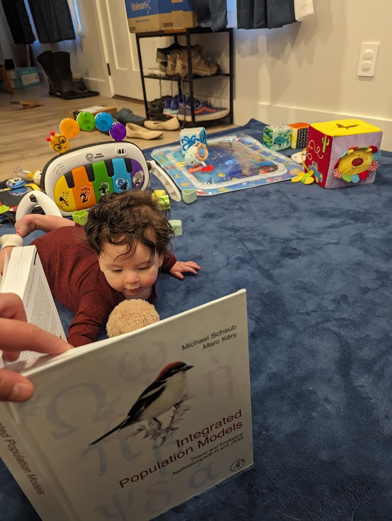
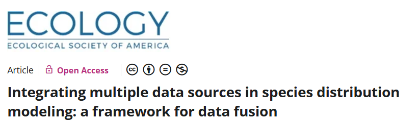
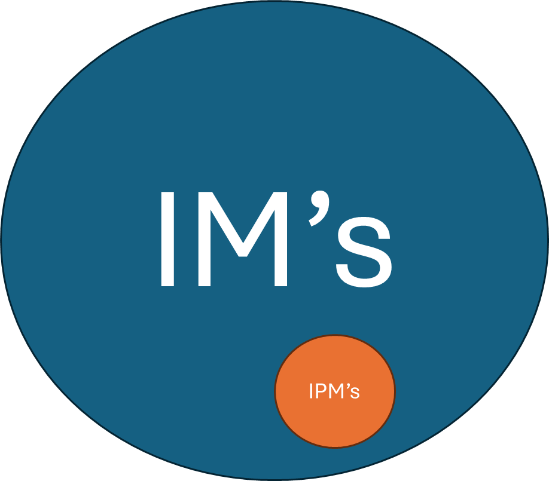
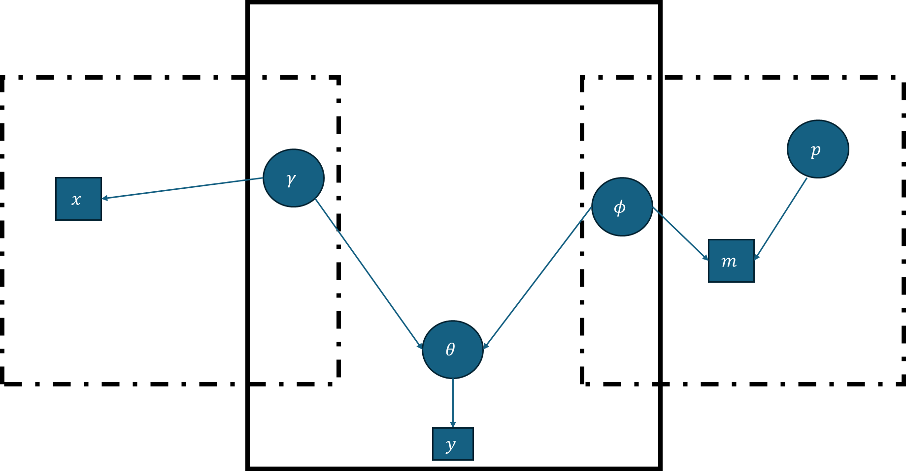
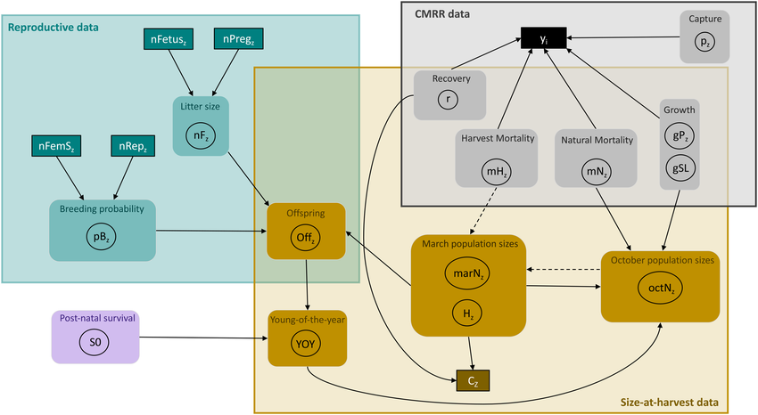
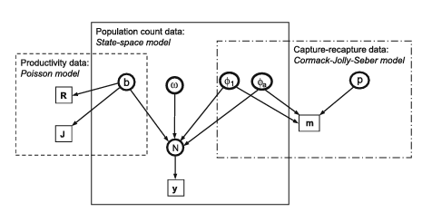
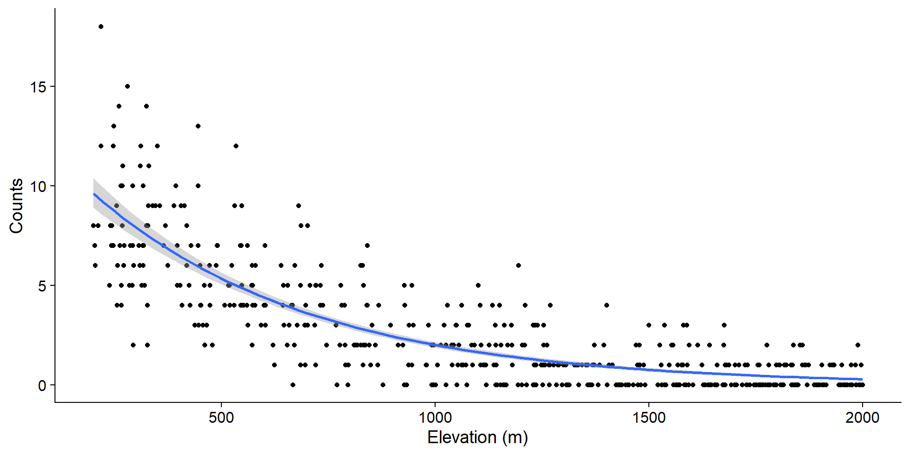

flowchart LR A[Survival] --> B[Abundance] C[Reproduction] --> B
Packages we’ll use:
ASMbook
rstan
Brief introductions 🐟

Integrated models
Integrated population models
Discussion
Examples and code?
Make it successful! 😄 Participate and discuss
If you are interested… you should keep reviewing this!
What is a model?
Integrated Population Model
What is an Integrated Model?
In hierarchical models, we can combine two or more GLM’s in a sequence
\[ Profit_i = \alpha_0 + \alpha_1 revenue_i - \alpha_2cost_i + \epsilon_{Profit, i} \]
\[ Revenue_i = \beta_0 + \beta_1Yield_i+\epsilon_{Revenue,i} \]
\[ Cost_i = \gamma_0 + \gamma_1Labor_i + \epsilon_{Cost,i} \]
\[ Yield = \zeta_0 + \zeta_1 Labor_i + \epsilon_{Yield_i} \]
\[ Labor_i = \delta_0 + \delta_1 Population_i + \epsilon_{labor_i} \]
\[ Population \sim Poisson(\lambda) \]
What?
Why?
How?
When to use?/When to use not?
A survival dataset with low sample size → noisy estimates
A count dataset with imperfect detection → biased estimates
A reproduction dataset that lacks survival context
We can join all together!
We could also (potentially) estimate new parameters!
flowchart LR A[Survival] --> B[Abundance] C[Reproduction] --> B
Statistical method to share information about some underlying process by combining data sets
How: Form joint likelihood with shared parameters among likelihoods of each data set
NOT ONLY WAY! (but we will focus on this)
Joint likelihood for two or more “disparate” data sets, with at least one shared parameter

flowchart LR A[$$\theta$$] --$$\omega_1$$ --> B($$data_1$$) A[$$\theta$$] --$$\omega_2$$ --> C($$data_2$$)
flowchart LR
subgraph Hidden
A[$$\theta$$]
B[$$\gamma$$]
C[$$\lambda$$]
end
Hidden --$$\omega_1$$ --> E($$data_1$$)
A--$$\omega_2$$ --> D($$data_2$$)
style Hidden fill:#bdf1f1,stroke:#f66,stroke-width:2px,color:#fff,stroke-dasharray: 5 5

flowchart LR
subgraph Hidden
A[$$\theta$$]
B[$$\gamma$$]
C[$$\lambda$$]
end
Hidden --$$\omega_1$$ --> E($$data_1$$)
A--$$\omega_2$$ --> D($$data_2$$)
style Hidden fill:#bdf1f1,stroke:#f66,stroke-width:2px,color:#fff,stroke-dasharray: 5 5
CJS model:
flowchart LR A($$\phi$$) ---> C[y] D(p) ---> C
\[ z_{i,f_i} = 1 \]
\[ z_{i,t+1} | z_{i,t} \sim Bernoulli(z_{i,t}\phi_{i,t}) \]
\[ y_{i,t} | z_{i,t} \sim Bernoulli(z_{i,t}p_{i,t}) \]


How: Formulate the joint density of all observed data (and latent variables)
Should you always run an IPM when you have the available data? If it has so many benefits!
What should your philosophy be?
When should you NOT run an IPM?
When data sources violate independence
When parameters become non-identifiable
Stack all models inside the same stan model statement
Important part: Choose the same names for shared parameters
Likelihood portion for each model
That’s it!
Important: You need to understand each model you run
Understand each individual model
Understanding “shared” parameters

Separate data, parameters, model, transformed parameters (generated quantities) clearly
Build each model separately, then join
Let’s go back to IM’s and run an SDM
Common swifts in Switzerland
We have count data for common swifts at different altitudes.

We are just wondering what the effect of elevation is on abundance (counts)
What model?
glm function
Call:
glm(formula = counts ~ selev, family = poisson(link = "log"),
data = countdata1)
Coefficients:
Estimate Std. Error z value Pr(>|z|)
(Intercept) 0.69493 0.03668 18.94 <2e-16 ***
selev -1.96130 0.06700 -29.27 <2e-16 ***
---
Signif. codes: 0 '***' 0.001 '**' 0.01 '*' 0.05 '.' 0.1 ' ' 1
(Dispersion parameter for poisson family taken to be 1)
Null deviance: 1718.8 on 499 degrees of freedom
Residual deviance: 578.4 on 498 degrees of freedom
AIC: 1615.4
Number of Fisher Scoring iterations: 5library(ASMbook)
NLL1 <- function(param, y, x) {
alpha <- param[1]
beta <- param[2]
lambda <- exp(alpha + beta * x)
LL <- dpois(y, lambda, log = TRUE) # LL contribution for each datum
return(-sum(LL)) # NLL for all data
}
# Minimize NLL
inits <- c(alpha = 0, beta = 0) # Need to provide initial values
sol1 <- optim(inits, NLL1, y = countdata1$counts, x = countdata1$selev, hessian = TRUE, method = 'BFGS')
tmp1 <- get_MLE(sol1, 4) MLE ASE LCL.95 UCL.95
alpha 0.6949 0.03668 0.623 0.7668
beta -1.9613 0.06700 -2.093 -1.8300Dataset of “birdwatchers”
Pretty reliable
They do not record zeroes!
What type of model?
A zero-truncated GLM! VGAM –> we won’t run the actual model, just maximizing likelihood
NLL2 <- function(param, y, x) {
alpha <- param[1]
beta <- param[2]
lambda <- exp(alpha + beta * x)
L <- dpois(y, lambda)/(1-ppois(0, lambda)) # L. contribution for each datum
return(-sum(log(L))) # NLL for all data
}
# Minimize NLL
inits <- c(alpha = 0, beta = 0) # Need to provide initial values
sol2 <- optim(inits, NLL2, y = countdata2$counts, x = countdata2$selev, hessian = TRUE, method = 'BFGS')
tmp2 <- get_MLE(sol2, 4) MLE ASE LCL.95 UCL.95
alpha 0.6461 0.03852 0.5706 0.7216
beta -2.0351 0.07089 -2.1740 -1.8961detdata
Detection/nondetection data
NOT COUNT DATA!
But, underlying abundance process affects the probability of detection!
Elevation affects the abundance! Abundance affects detection
What model?
GLM glm. Binomial! What type of link function?
clogclog
\[ p(detect) = 1-e^{-\lambda r} \]
r is probability of detection of each individual
\[ log(-log(1-p))=log(\lambda r) \]
Call:
glm(formula = y ~ selev, family = binomial(link = "cloglog"),
data = detdata)
Coefficients:
Estimate Std. Error z value Pr(>|z|)
(Intercept) 0.71081 0.04169 17.05 <2e-16 ***
selev -1.98144 0.09499 -20.86 <2e-16 ***
---
Signif. codes: 0 '***' 0.001 '**' 0.01 '*' 0.05 '.' 0.1 ' ' 1
(Dispersion parameter for binomial family taken to be 1)
Null deviance: 2308.8 on 1999 degrees of freedom
Residual deviance: 1569.8 on 1998 degrees of freedom
AIC: 1573.8
Number of Fisher Scoring iterations: 6NLL3 <- function(param, y, x) {
alpha <- param[1]
beta <- param[2]
lambda <- exp(alpha + beta * x)
psi <- 1-exp(-lambda)
LL <- dbinom(y, 1, psi, log = TRUE) # L. contribution for each datum
return(-sum(LL)) # NLL for all data
}
# Minimize NLL
inits <- c(alpha = 0, beta = 0)
sol3 <- optim(inits, NLL3, y = detdata$y, x = detdata$selev, hessian = TRUE, method = 'BFGS')
tmp3 <- get_MLE(sol3, 4) MLE ASE LCL.95 UCL.95
alpha 0.7108 0.04214 0.6282 0.7934
beta -1.9815 0.09682 -2.1712 -1.7917We are assuming the data are independent (BIG ASSUMPTION! Read about it!)
\[ L_{joint} = L_1L_2L_3 \]
\[NLL_{joint}= - LL_1 - LL_2 -LL_3\]
NLLjoint <- function(param, y1, x1, y2, x2, y3, x3) {
# Definition of elements in param vector (shared between data sets)
alpha <- param[1] # log-linear intercept
beta <- param[2] # log-linear slope
# Likelihood for the Poisson GLM for data set 1 (y1, x1)
lambda1 <- exp(alpha + beta * x1)
L1 <- dpois(y1, lambda1)
# Likelihood for the ztPoisson GLM for data set 2 (y2, x2)
lambda2 <- exp(alpha + beta * x2)
L2 <- dpois(y2, lambda2)/(1-ppois(0, lambda2))
# Likelihood for the cloglog Bernoulli GLM for data set 3 (y3, x3)
lambda3 <- exp(alpha + beta * x3)
psi <- 1-exp(-lambda3)
L3 <- dbinom(y3, 1, psi)
# Joint log-likelihood and joint NLL: here you can see that sum!
JointLL <- sum(log(L1)) + sum(log(L2)) + sum(log(L3)) # Joint LL
return(-JointLL) # Return joint NLL
}
# Minimize NLLjoint
inits <- c(alpha = 0, beta = 0)
solJoint <- optim(inits, NLLjoint, y1 = countdata1$counts, x1 = countdata1$selev, y2 = countdata2$counts, x2 = countdata2$selev,
y3 =detdata$y, x3 = detdata$selev, hessian = TRUE, method = 'BFGS')
# Get MLE and asymptotic SE and print and save
(tmp4 <- get_MLE(solJoint, 4)) MLE ASE LCL.95 UCL.95
alpha 0.6861 0.01852 0.6498 0.7224
beta -1.9704 0.03522 -2.0394 -1.9013 MLE ASE LCL.95 UCL.95
alpha 0.6860979 0.01851556 0.6498081 0.7223878
beta -1.9703732 0.03522001 -2.0394032 -1.9013432You have the data
Challenge: Run a single integrated model in Stan